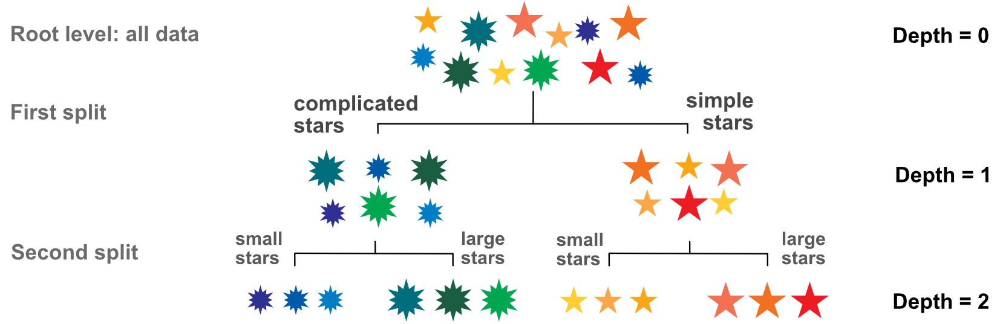
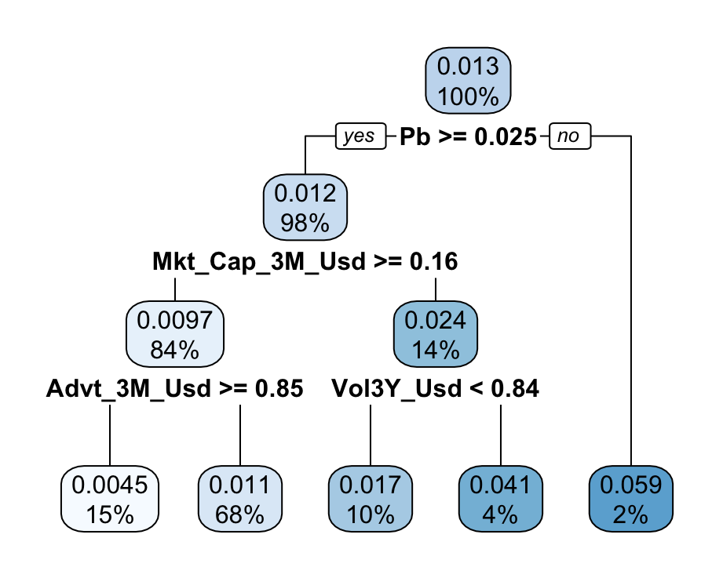
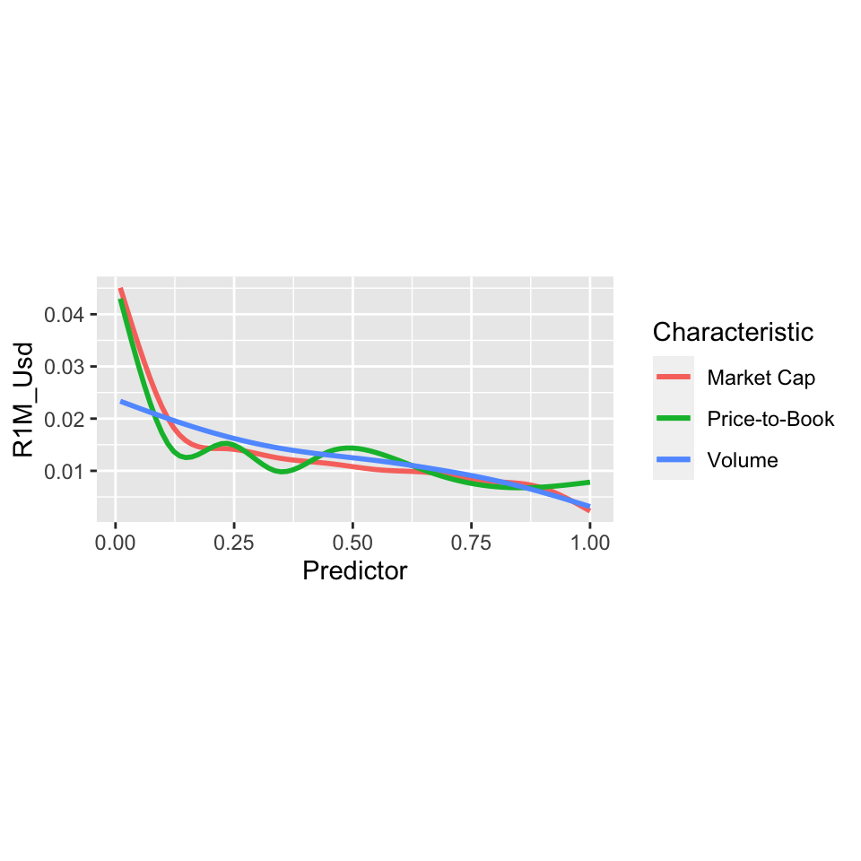
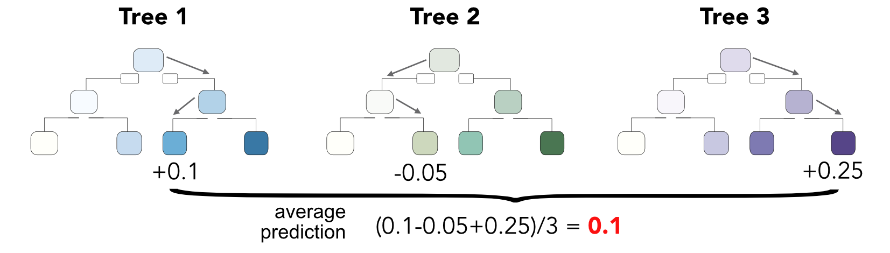
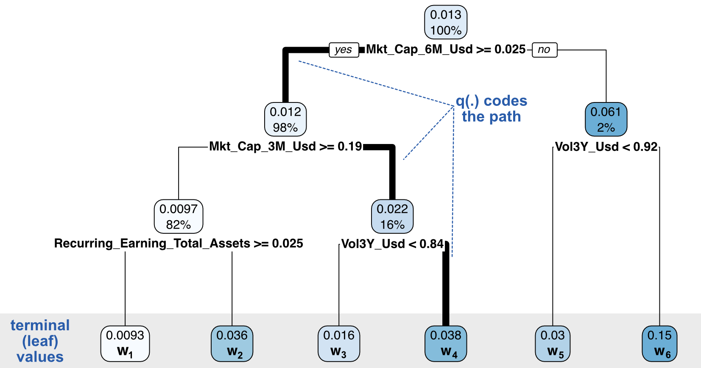
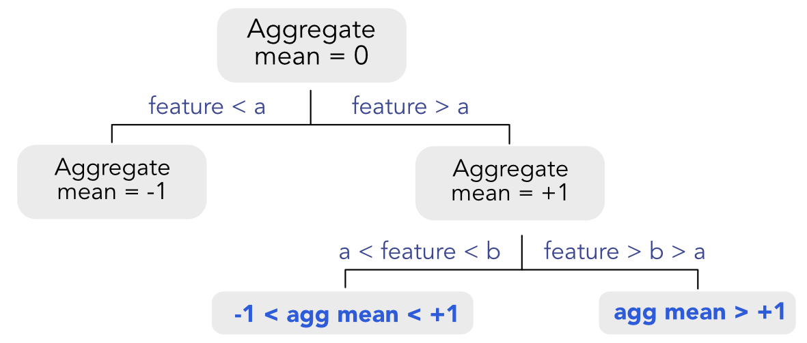

6 树模型
分类树和回归树是简单而强大的聚类算法，因专着而流行 Breiman et al. (1984)。众所周知，在处理表格数据时，决策树及其扩展是非常有效的预测工具。 ML 竞赛中大部分获奖方案（特别是在 Kaggle 网站上）14）诉诸简单树的改进。例如，生物信息学的元研究 Olson et al. (2018) 发现提升树和随机森林是 13 种算法中排名前 2 的算法（不包括神经网络）。
最近，机器学习在金融领域的应用激增，导致许多出版物在投资组合分配问题中使用树。一个很长但并不详尽的清单包括： Ballings et al. (2015), Patel et al. (2015a), Patel et al. (2015b), Moritz and Zimmermann (2016), Krauss, Do, and Huck (2017), Gu, Kelly, and Xiu (2020b), Guida and Coqueret (2018a), Coqueret and Guida (2020) 和 Simonian et al. (2019)。一项显着的贡献是 Bryzgalova, Pelger, and Zhu (2019) 其中作者通过简单的树对投资组合进行排序，从树中创建因子，他们称之为 资产定价树。最近的另一篇文章（X. He et al. (2021)）旨在为资产定价目的制定全球分割标准。
在本章中，我们回顾与树相关的方法及其在投资组合选择中的应用。
6.1 简单树
6.1.1 原理
决策树试图将数据集划分为 同质簇。给定一个外生变量 \(\mathbf{Y}\) 和特点 \(\mathbf{X}\)，树迭代地将样本分成组（通常一次两个），这些组在 \(\mathbf{Y}\) 尽可能。分割是根据一组特征中的一个变量进行的。关于命名法的简短说明：当 \(\mathbf{Y}\) 由实数组成，我们谈论 回归树 当 \(\mathbf{Y}\) 是绝对的，我们使用术语 分类树.
在正式化这个想法之前，我们在图中说明了这个过程 6.1。共有 12 颗星，具有三个特征：颜色、大小和复杂性（分支数量）。

图 6.1：基本树结构；分裂过程的可视化。
因变量是颜色（为简单起见，让我们考虑与颜色相关的波长）。第一次分割是根据大小或复杂性进行的。显然，复杂性是更好的选择：复杂的星星是蓝色和绿色，而简单的星星是黄色、橙色和红色。根据大小分裂会混合蓝色和黄色星星（小星星）以及绿色和橙色星星（大星星）。
第二步是将两个集群进一步拆分一级。由于只有一个变量（大小）相关，因此二次分割很简单。最后，我们的程式化树有四个一致的簇。与因子投资的类比很简单：颜色代表绩效：红色代表高性能，蓝色代表平庸绩效。特征（星级的大小和复杂性）被公司特定的属性所取代，例如资本、会计比率等。因此，练习的目的是找到允许将公司分为表现良好的公司和可能表现较差的公司的特征。
我们现在转向回归树的技术构建（分裂过程）。我们遵循以下标准文献 Breiman et al. (1984) 或在第 9 章 Hastie, Tibshirani, and Friedman (2009)。给定一个样本（\(y_i\),\(\mathbf{x}_i\)）的大小 \(I\), 一个 回归 树寻找使总变异最小化的分裂点 \(y_i\) 在两个子簇内。这两个簇不需要具有相同的大小。为了做到这一点，它分两步进行。首先，它发现，对于每个特征 \(x_i^{(k)}\)，最佳分裂点（以便簇在 \(\mathbf{Y}\)）。其次，它选择实现最高同质性的特征。
回归树中的同质性与方差密切相关。既然我们想要 \(y_i\) 为了使每个簇内部相似，我们寻求 最小化它们的可变性 （或 色散）在每个簇内，然后将两个数字相加。我们无法对方差求和，因为这不会考虑簇的相对大小。因此，我们与 总计 变异，即方差乘以簇中元素的数量。
下面，符号有点重，因为我们使用上标 \(k\) （特征的索引），但很大程度上可以忽略这些上标以方便理解。第一步是找到每个特征的最佳分割，即求解 \(\underset{c^{(k)}}{\text{argmin}} \ V^{(k)}_I(c^{(k)})\) 与 \[\begin{equation} \tag{6.1} V^{(k)}_I(c^{(k}))= \underbrace{\sum_{x_i^{(k)}<c^{(k)}}\left(y_i-m_I^{k,-}(c^{(k)}) \right)^2}_{\text{Total dispersion of first cluster}} + \underbrace{\sum_{x_i^{(k)}>c^{(k)}}\left(y_i-m_I^{k,+}(c^{(k)}) \right)^2}_{\text{Total dispersion of second cluster}}, \end{equation}\] 哪里 \[\begin{align*} m_I^{k,-}(c^{(k)})&=\frac{1}{\#\{i,x_i^{(k)}<c^{(k)} \}}\sum_{\{x_i^{(k)}<c^{(k)} \}}y_i \quad \text{ and } \\ m_I^{k,+}(c^{(k)})&=\frac{1}{\#\{i,x_i^{(k)}>c^{(k)} \}}\sum_{\{x_i^{(k)}>c^{(k)} \}}y_i \end{align*}\] 是平均值 \(Y\)，条件为 \(X^{(k)}\) 小于或大于 \(c\)。基函数 \(\#\{\cdot\}\) 计算其参数的实例数。对于功能 \(k\), 最优分割 \(c^{k,*}\) 因此， 是两个子群上的总离差最小的一个。
最优分割满足 \(c^{k,*}= \underset{c^{(k)}}{\text{argmin}} \ V^{(k)}_I(c^{(k)})\)。在所有可能的分裂变量中，树将选择一个不仅在所有分裂上而且在所有变量上最小化总离散度的变量： \(k^*=\underset{k}{\text{argmin}} \ V^{(k)}_I(c^{k,*})\).
执行一次拆分后，该过程将在两个新形成的集群上继续。有几个标准可以确定何时停止分裂过程（请参阅第 6.1.3）。一个简单的标准是确定树的最大级别数（深度）。通常的条件是对每次分割施加预期的最小增益。如果分割后离散度的减少只是微不足道的并且低于指定阈值，则不执行分割。对于决策树的进一步技术讨论，我们例如参考第 9.2.4 节 Hastie, Tibshirani, and Friedman (2009).
当树被构建（训练）时，很容易对新实例进行预测。给定其特征值，该实例最终会出现在树的一片叶子中。每片叶子都有一个标签的平均值：这是预测的结果。当然，这仅在标签为数字时才有效。我们下面讨论分类时发生的变化。
6.1.2 分类的更多细节
分类练习比回归任务稍微复杂一些。最明显的区别是分散性或异质性的衡量。这个损失函数必须考虑到最终输出不是一个简单的数字，而是一个向量。输出 \(\tilde{\textbf{y}}_i\) 标签中有多少个类别就有多少个元素，每个元素是实例属于相应类别的概率。
例如，如果有 3 个类别： 买, 保持 和 卖，那么每个实例都会有一个标签，其中的列数与类的数量一样多。按照我们的示例，一个标签将是 (1,0,0) 买 例如位置。我们参考章节 4.5.2 有关此主题的介绍。
在树内部，标签在每个集群级别聚合。典型的输出看起来像 (0.6,0.1,0.3)：它们是集群中代表的每个类别的比例。在这种情况下，集群有 60% 买, 10% 保持 和 30% 卖.
损失函数必须考虑标签的多维性。在构建树时，由于目标是有利于同质性，因此损失会惩罚不集中于某一类的输出。事实上，面对多样化的输出（0.3,0.4,0.3）比集中的情况（0.8,0.1,0.1）更难处理。
因此，该算法寻求纯度：它搜索一种分裂标准，该标准将导致尽可能纯净的集群，即具有一个非常主导的类别，或至少只有几个主导类别。文献提出了几种度量标准，所有度量标准都基于输出生成的比例。如果有 \(J\) 类，我们将这些比例表示为 \(p_j\)。对于每片叶子，通常的损失函数是：
- 基尼杂质指数： \(1-\sum_{j=1}^Jp_j^2;\)
- 错误分类错误： \(1-\underset{j}{\text{max}}\, p_j;\)
- 熵： \(-\sum_{j=1}^J\log(p_j)p_j.\)
基尼指数只不过是减去衡量投资组合多元化程度的赫芬达尔指数。树寻找多样性最少的分区。基尼指数的最小值为零，当为 1 时达到最小值 \(p_j=1\) 所有其他都等于零。最大值等于 \(1-1/J\) 并且当所有的都达到 \(p_j=1/J\)。其他两个损失也存在类似的关系。错误分类错误的一个缺点是它缺乏可区分性，这解释了为什么其他两种选择经常受到青睐。
一旦树生长完毕，新实例将自动属于最后一片叶子。该叶子与其嵌套的类的比例相关。通常，为了进行预测，当新实例与叶子关联时，会选择比例（或概率）最高的类。
6.1.3 剪枝准则
构建树时，可以进行分裂过程，直到长出完整的树，即：
- 所有实例都属于单独的叶子，和/或
- 所有叶子都包含无法根据当前特征集进一步分离的实例。
在此阶段，无法进行分裂过程。
显然，当预测变量相关、数量众多且数字化时，完全生长的树通常会产生近乎完美的拟合。尽管如此，训练样本的细粒度特性对于样本外预测来说并没有多大意义。例如，能够完美匹配 2000 年到 2006 年的模式在 2007 年到 2009 年期间可能不会很有趣。树的最可靠部分是最接近根的部分，因为它们嵌入了大部分数据：早期集群中的平均值是值得信赖的，因为它们是根据大量观测值计算的。第一个分割是最重要的，因为它们决定了最一般的模式。最深的分裂只涉及样本的特殊性。
因此，必须限制树的大小以避免过度拟合。修剪树的方法有多种，所有方法都取决于某些特定标准。我们在下面列出了其中的一些：
- 为每个终端节点（叶）施加最小实例数。这确保了每个最终簇都由足够数量的观测值组成。因此，标签的平均值是可靠的，因为它是根据大量数据计算得出的。
- 类似地，在考虑任何进一步分裂之前，可以强制集群具有最小大小。这一标准当然与上述标准有关。
- 要求契合度有一定的提升阈值。如果分割不足以减少损失，则可以认为没有必要。用户指定一个小数字 \(\epsilon>0\) 仅当分割后获得的损失小于 \(1-\epsilon\) 乘以分割前的损失。
- 限制树的深度。深度定义为树的根和任何叶子之间的总体最大分裂数。
在下面的示例中，我们同时实现所有这些标准，但通常最多两个就足够了。
6.1.4 代码与解释
我们从一棵简单的树及其解释开始。我们使用包 rpart 及其绘图引擎 rpart.plot。标签是未来 1 个月的收益率，特征是样本中可用的所有预测变量。该树是在完整样本上进行训练的。
## Loading required package: rpart
library(rpart) # Tree package
library(rpart.plot) # Tree plot package
formula <- paste("R1M_Usd ~", paste(features, collapse = " + ")) # Defines the model
formula <- as.formula(formula) # Forcing formula object
fit_tree <- rpart(formula,
data = data_ml, # Data source: full sample
minbucket = 3500, # Min nb of obs required in each terminal node (leaf)
minsplit = 8000, # Min nb of obs required to continue splitting
cp = 0.0001, # Precision: smaller = more leaves
maxdepth = 3 # Maximum depth (i.e. tree levels)
)
rpart.plot(fit_tree) # Plot the tree
图 6.2：简单的基于特征的树。因变量是 未来 1 个月收益。
树的表示通常存在约定。在每个节点，条件用布尔表达式描述分割。如果表达式是 真实，然后实例转到 左簇;如果没有，则转到 对 集群。给定整个样本，这棵树中的初始分割（图 6.2)按照市净率计算。如果实例的 Pb 分数（或值）高于 0.025，则将该实例放入左桶中；否则，它会进入 右桶.
在每个节点，有两个重要的指标。第一个是集群中标签的平均值，第二个是集群中实例的比例。在树的顶部，所有实例 (100%) 都存在，平均 未来 1 个月收益率为 1.3%。下面一层，左侧集群是迄今为止最拥挤的，大约 98% 的观测值平均收益率为 1.2%。右侧的集群要小得多 (2%)，但集中的实例具有更高的平均收益率 (5.9%)。这可能是样本的特殊之处。
分裂过程在每个节点处类似地继续，直到满足某些条件（通常在这里：达到最大深度）。颜色编码平均收益率：从白色（低收益率）到蓝色（高收益率）。最左边平均收益率最低的集群由满足以下条件的公司组成： 全部 以下标准：
- Pb 分数高于 0.025；
- 3个月市值得分高于0.16；
- 过去 3 个月的日均交易量得分高于 0.85。
请注意，树的一个特点是它们的簇大小可能存在异质性。有时，一些集群收集了几乎所有的观察结果，而一些小组则嵌入了一些异常值。这不是树的有利特性，因为小群体更有可能是侥幸，并且可能无法概括样本外。
这就是我们在构建树时施加限制的原因。第一个（代码中的 minbucket = 3500）要求每个集群至少包含 3500 个实例。第二个 (minsplit) 进一步要求一个簇至少包含 8000 个观测值，以便进行分裂过程。这些值在逻辑上取决于训练样本的大小。代码中的 cp = 0.0001 参数要求任何分割都能将损失减少到分割前原始值的 0.9999 倍以下。最后，最大深度三本质上意味着树的根和任何终端叶子之间最多有三个分裂。
树的复杂性（通过末端叶子的数量来衡量）是 minbucket、minsplit 和 cp 的递减函数以及最大深度的递增函数。
一旦模型经过训练（即树生长），任何实例的预测都是该实例应落在的集群内标签的平均值。
predict(fit_tree, data_ml[1:6,]) # Test (prediction) on the first six instances of the sample## 1 2 3 4 5 6
## 0.01088066 0.01088066 0.01088066 0.01088066 0.01088066 0.01088066给出该图，我们立即得出结论，前六个实例都属于第二个集群（从左侧开始）。
作为对第一次分割的验证，我们根据市值、市净率和交易量绘制了未来收益率的平滑平均值。
data_ml %>% ggplot() +
stat_smooth(aes(x = Mkt_Cap_3M_Usd, y = R1M_Usd, color = "Market Cap"), se = FALSE) +
stat_smooth(aes(x = Pb, y = R1M_Usd, color = "Price-to-Book"), se = FALSE) +
stat_smooth(aes(x = Advt_3M_Usd, y = R1M_Usd, color = "Volume"), se = FALSE) +
xlab("Predictor") + coord_fixed(11) + labs(color = "Characteristic")
图 6.3：1 个月未来收益率的平均值，以市值、市净率和波动率分数为条件。
该图显示了基于市值和市净率的集群的相关性。对于这两个特征的低分数值，平均收益率很高（曲线左侧每月接近 +4%）。例如，与成交量相比，这种模式更为明显。
最后，我们评估测试集上单个树的预测质量（该树在训练集上生长）。我们使用更深的树，最大深度为五。
fit_tree2 <- rpart(formula,
data = training_sample, # Data source: training sample
minbucket = 1500, # Min nb of obs required in each terminal node (leaf)
minsplit = 4000, # Min nb of obs required to continue splitting
cp = 0.0001, # Precision: smaller cp = more leaves
maxdepth = 5 # Maximum depth (i.e. tree levels)
)
mean((predict(fit_tree2, testing_sample) - testing_sample$R1M_Usd)^2) # MSE## [1] 0.03700039## [1] 0.5416619均方误差通常很难解释。将收益率错误映射到对投资决策的影响并不容易。命中率是一个更直观的指标，因为它评估正确猜测（以及因此有利可图的投资）的比例。显然，它并不完美：55% 的小收益可以通过 45% 的大损失来缓解。尽管如此，它是一个流行的度量标准，而且它对应于二元分类练习中经常计算的常用准确度度量。这里，0.542 的精度是令人满意的。即使超过 50% 的任何数字看起来都很有价值，但也不能忘记交易成本会削弱收益。因此，基准阈值可能至少为 52%。
6.2 随机森林
虽然树可以直观地表示之间的关系 \(\mathbf{Y}\) 和 \(\mathbf{X}\)，它们可以通过集成的简单思想来改进，其中预测工具是 合并的 （本主题的 模型聚合 在本章中更一般和更详细地讨论 11).
6.2.1 原理
大多数时候，当手头有多个建模选项时，预先并不清楚哪个模型最好，因此组合似乎是实现预测误差多样化的合理途径（当它们不太相关时）。模型多样化的一些理论基础在 Schapire (1990).
稍后提出了更多实际考虑因素 T. K. Ho (1995) 更重要的是在 Breiman (2001) 这是随机森林的主要参考。 Bagging 成功用于 Yin (2020) 汇总股票预测。有两种方法可以从简单的树创建多个预测变量，随机森林将这两种方法结合起来：
- 首先，可以在相似但不同的数据集上训练模型。实现此目的的一种方法是通过引导程序：在有或没有替换的情况下对实例进行重新采样（对于每个单独的树），每次构建新树时都会产生新的训练数据。
- 其次，可以通过减少预测变量的数量来改变数据。替代模型是根据不同的特征集构建的。用户选择要保留的特征数量，然后算法在每次尝试时随机选择这些特征。
因此，种植许多不同的树变得很简单，并且整体只是一个 加权组合 所有树。通常，使用相等的权重，这是一个不可知且稳健的选择。我们在图中说明了简单组合（也称为装袋）的想法 6.4 下面。最终预测只是所有中间预测的平均值。

图 6.4：通过随机森林组合树输出。
随机森林因为是建立在引导思想之上的，所以比简单树更有效。它们被使用 Ballings et al. (2015), Patel et al. (2015a), Krauss, Do, and Huck (2017), 和 Huck (2019) 他们在这些论文中表现得非常好。随机森林的原始理论特性在 Breiman (2001) 用于分类树。在分类练习中，通过投票做出决定：每棵树为特定类别投票，得票最多的类别获胜（如果出现平局，可能会随机选择）。 Breiman (2001) 将边际函数定义为
\[mg=M^{-1}\sum_{m=1}^M1_{\{h_m(\textbf{x})=y\}}-\max_{j\neq y}\left(M^{-1}\sum_{m=1}^M1_{\{h_m(\textbf{x})=j\}}\right),\]
其中左边部分是基于投票的平均票数 \(M\) 树 \(h_m\) 对于正确的类别（模型 \(h_m\) 基于 \(\textbf{x}\) 与数据值匹配 \(y\)）。右侧部分是任何其他类别的最大平均值。边际反映了聚合森林正确分类的信心。泛化误差是概率 \(mg\) 严格来说是负面的。 Breiman (2001) 表明聚合的不准确性（通过泛化误差测量）的界限为 \(\bar{\rho}(1-s^2)/s^2\), 其中
- \(s\) 是强度（平均质量15）各个分类器和
- \(\bar{\rho}\) 是学习者之间的平均相关性。
值得注意的是， Breiman (2001) 还表明，随着树数量增长到无穷大，误差会收敛到某个有限数量，这解释了为什么随机森林不容易过度拟合。
虽然原始论文 Breiman (2001) 致力于分类模型，此后许多文章都解决了回归树的问题。我们建议有兴趣的读者参考 Biau (2012) 和 Scornet et al. (2015)。最后，可以在分类集成中获得进一步的结果 Biau, Devroye, and Lugosi (2008) 我们提到了简短的调查论文 Denil, Matheson, and De Freitas (2014) 总结了该领域的最新成果。
6.2.2 代码和结果
随机森林有多种实现方式。为简单起见，我们选择使用原始 R 库，但另一种选择可能是 h2o 开发的库，它是一种高效的机器学习元环境（用 Java 编码）。
randomForest 的语法遵循许多 ML 库的语法。一些随机森林实现的完整选项列表非常大。16 下面，我们训练一个模型并展示测试样本的前 5 个实例的预测。
library(randomForest)
set.seed(42) # Sets the random seed
fit_RF <- randomForest(formula, # Same formula as for simple trees!
data = training_sample, # Data source: training sample
sampsize = 10000, # Size of (random) sample for each tree
replace = FALSE, # Is the sampling done with replacement?
nodesize = 250, # Minimum size of terminal cluster
ntree = 40, # Nb of random trees
mtry = 30 # Nb of predictive variables for each tree
)
predict(fit_RF, testing_sample[1:5,]) # Prediction over the first 5 test instances ## 1 2 3 4 5
## 0.009787728 0.012507087 0.008722386 0.009398814 -0.011511758第一个评论是每个实例都有自己的预测，这与简单的树模型结果形成对比。结合许多树可以产生量身定制的预测。请注意，该块的第二行冻结了随机数生成。事实上，随机森林的构建取决于为构建个体学习器而选择的实例和特征的任意组合。
在上面的示例中，每个单独的学习器（树）都建立在 10,000 个随机选择的实例（无替换）之上，并且每个终端叶（簇）必须包含至少 240 个元素（观察）。总共聚合了 40 棵树，每棵树都是基于 30 个随机选择的预测变量（从整个特征集中）构建的。
与简单的树不同，不可能简单地说明学习过程的结果（尽管存在解决方案，请参阅第 13.1.1）。提取所有 40 棵树是可能的，但综合可视化是遥不可及的。可以通过变量重要性获得简化视图，如第 1 节中所述 13.1.2.
最后，我们可以评估模型的准确性。
## [1] 0.03698197## [1] 0.5370186MSE 小于 4%，命中率接近 54%，合理地高于 50% 和 52% 阈值。
让我们看看是否可以通过分类练习来提高命中率。我们首先根据新公式训练模型（标签为 R1M_Usd_C）。
formula_C <- paste("R1M_Usd_C ~", paste(features, collapse = " + ")) # Defines the model
formula_C <- as.formula(formula_C) # Forcing formula object
fit_RF_C <- randomForest(formula_C, # New formula!
data = training_sample, # Data source: training sample
sampsize = 20000, # Size of (random) sample for each tree
replace = FALSE, # Is the sampling done with replacement?
nodesize = 250, # Minimum size of terminal cluster
ntree = 40, # Number of random trees
mtry = 30 # Number of predictive variables for each tree
)然后我们可以评估正确（二元）猜测的比例。
## [1] 0.4971371准确性令人失望。对此有两种可能的解释（除了训练和测试集中可能存在非常不同的模式之外）。第一个是样本量，可能太小了。原始训练集有超过 200,000 个观测值，因此我们在上述训练规范中只保留了十分之一。因此，我们可能会忽视相关信息，而成本可能会很高。第二个原因是预测变量的数量，它设置为 30，即我们可以使用的预测变量总数的三分之一。不幸的是，这为算法留下了选择不太相关的预测变量的空间。例程选择的默认预测变量数量是 \(\sqrt{p}\) 和 \(p/3\) 分别用于分类和回归任务。这里 \(p\) 是特征总数。
6.3 提升树：Adaboost
与不可知聚合相比，提升的想法稍微先进一些。在随机森林中，我们希望通过许多树的多样化来提高模型的整体质量。在提升过程中，每当添加新树时都会寻求迭代改进模型。促进学习的方法有很多，我们提出了两种可以轻松用树实现的方法。第一个（Adaboost，用于自适应增强）通过逐步关注产生最大错误的实例来改进学习过程。第二个（xgboost）是一种灵活的算法，其中每个新树只专注于训练样本损失的最小化。
6.3.1 方法论
Adaboost 的起源可以追溯到 Freund and Schapire (1997) 和 Freund and Schapire (1996)，为了完整起见，我们还提到了这本书致力于通过 Schapire and Freund (2012)。这些想法的扩展提出于 J. Friedman et al. (2000) （所谓真正的Adaboost算法）并且在 Drucker (1997) （用于回归分析）。理论处理方法是通过 Breiman et al. (2004).
我们首先直接陈述算法的总体结构：
- 设置相等的权重 \(w_i=I^{-1}\);
- 对于 \(m=1,\dots,M\) 做：
- 寻找学习者 \(l_m\) 最小化加权损失 \(\sum_{i=1}^Iw_iL(l_m(\textbf{x}_i),\textbf{y}_i)\);
- 计算学习者权重 \[\begin{equation} \tag{6.2} a_m=f_a(\textbf{w},l_m(\textbf{x}),\textbf{y}); \end{equation}\]
- 更新实例权重 \[\begin{equation} \tag{6.3} w_i \leftarrow w_ie^{f_w(l_m(\textbf{x}_i), \textbf{y}_i)}; \end{equation}\]
- 标准化 \(w_i\) 总和为一。
- 输出例如 \(\textbf{x}_i\) 是一个简单的函数 \(\sum_{m=1}^M a_ml_m(\textbf{x}_i)\), \[\begin{equation} \tag{6.4} \tilde{y}_i=f_y\left(\sum_{m=1}^M a_ml_m(\textbf{x}_i) \right). \end{equation}\]
让我们评论一下算法的步骤。该公式适用于 Adaboost 的许多变体，我们将指定函数 \(f_a\) 和 \(f_w\) 下面。
- 第一步寻找学习者（树） \(l_m\) 最大限度地减少加权损失。这里是基本损失函数 \(L\) 本质上取决于任务（回归与分类）。
- 第二步和第三步是最有趣的，因为它们是 Adaboost 的核心：它们定义了算法顺序适应的方式。因为目的是聚合模型，所以与学习者的统一权重相比，更复杂的方法是为每个学习者量身定制权重。自然属性（对于 \(f_a\)）应该是产生较小误差的学习器应该具有较大的权重，因为它更准确。
- 第三步是改变观测值的权重。在这种情况下，因为模型旨在改进学习过程， \(f_w\) 的构建是为了对当前模型做得不好（即产生最大误差）的观察给予更多权重。因此，下一个学习者将被激励更多地关注这些病态案例。
- 第三步是简单的缩放过程。
表中 6.1，我们详细介绍了文献中使用的加权函数的两个示例。对于原始的 Adaboost (Freund and Schapire (1996), Freund and Schapire (1997)），标签是二进制的，只有值 +1 和 -1。第二个例子源于 Drucker (1997) 并致力于回归分析（带有实值标签）。有兴趣的读者可以看看其他的可能性 Schapire (2003) 和 Ridgeway, Madigan, and Richardson (1999).
| 宾。分类。 （原版。Adaboost） | 回归（德鲁克（1997）） | |
|---|---|---|
| 个别错误 | \(\epsilon_i=\textbf{1}_{\left\{y_i\neq l_m(\textbf{x}_i) \right\}}\) | \(\epsilon_i=\frac{|y_i- l_m(\textbf{x}_i)|}{\underset{i}{\max}|y_i- l_m(\textbf{x}_i)|}\) |
| 学习者的权重通过 \(f_a\) | \(f_a=\log\left(\frac{1-\epsilon}{\epsilon} \right)\),与 \(\epsilon=I^{-1}\sum_{i=1}^Iw_i \epsilon_i\) | \(f_a=\log\left(\frac{1-\epsilon}{\epsilon} \right)\),与 \(\epsilon=I^{-1}\sum_{i=1}^Iw_i \epsilon_i\) |
| 实例的权重通过 \(f_w(i)\) | \(f_w=f_a\epsilon_i\) | \(f_w=f_a\epsilon_i\) |
| 输出功能通过 \(f_y\) | \(f_y(x) = \text{sign}(x)\) | 预测的加权中位数 |
让我们评论一下最初的 Adaboost 规范。基本误差项 \(\epsilon_i=\textbf{1}_{\left\{y_i\neq l_m(\textbf{x}_i) \right\}}\) 是一个虚拟数字，指示预测是否正确（我们记得只有两个可能的值，+1 和 -1）。平均误差 \(\epsilon\in [0,1]\) 只是个体误差和权重的加权平均值 \(m^{th}\) 学习者在方程中定义 (6.2) 由下式给出 \(a_m=\log\left(\frac{1-\epsilon}{\epsilon} \right)\)。功能 \(x\mapsto \log((1-x)x^{-1})\) 减少于 \([0,1]\) 并切换符号（从正到负） \(x=1/2\)。因此，当平均误差较小时，学习器具有较大的正权重，但当误差变大时，学习器甚至可以获得负权重。确实，门槛 \(\epsilon>1/2\) 表明学习者有超过 50% 的时间是错误的。显然，这表明存在问题，学习器甚至应该被丢弃。
实例权重的变化遵循类似的逻辑。新的重量与 \(w_i\left(\frac{1-\epsilon}{\epsilon} \right)^{\epsilon_i}\)。如果预测正确并且 \(\epsilon_i=0\)，权重不变。如果预测错误并且 \(\epsilon_i=1\)，根据总误差调整权重 \(\epsilon\)。如果误差很小并且学习器效率很高（\(\epsilon<1/2\)），那么 \((1-\epsilon)/\epsilon>1\) 并且实例的权重增加。这意味着在下一轮中，学习者将不得不更多地关注实例 \(i\).
最后，模型的最终预测对应于各个预测的加权和的符号：如果总和为正，则模型将预测 +1，否则将产生 -1。17 零和的可能性可以忽略不计。对于数字标签，过程稍微复杂一些，我们参考第 3 节第 8 步 Drucker (1997) 有关如何进行的更多详细信息。
我们用一个关于实例权重的词来结束本次演讲。有两种方法可以处理这个话题。第一个在损失函数层面起作用。对于回归树，方程 (6.1) 自然会推广到 \[V^{(k)}_N(c^{(k)}, \textbf{w})= \sum_{x_i^{(k)}<c^{(k)}}w_i\left(y_i-m_N^{k,-}(c^{(k)}) \right)^2 + \sum_{x_i^{(k)}>c^{(k)}}w_i\left(y_i-m_N^{k,+}(c^{(k)}) \right)^2,\]
因此是一个重量很大的实例 \(w_i\) 将对其集群的分散做出更大的贡献。对于分类目标来说，改动比较复杂，我们参考 Ting (2002) 实例加权树生长算法的一个示例。这个想法与通过损失矩阵改变错误分类风险密切相关（参见第 9.2.4 节） Hastie, Tibshirani, and Friedman (2009)).
强制实例加权的第二种方法是通过随机采样。如果实例有权重 \(w_i\)，那么学习器的训练可以在随机提取的样本上进行，样本的分布等于 \(w_i\)。在这种情况下，权重较大的实例将有更多机会出现在训练样本中。最初的Adaboost算法依赖于这种方法。
6.3.2 插图
下面，我们测试原始 Adaboost 分类器的实现。因此，我们使用 R1M_Usd_C 变量并更改模型公式。 Adaboost 在大型数据集上的计算成本很高，因此我们使用较小的样本，并且只进行了 3 次迭代。
library(fastAdaboost) # Adaboost package
subsample <- (1:52000)*4 # Target small sample
fit_adaboost_C <- adaboost(formula_C, # Model spec.
data = data.frame(training_sample[subsample,]), # Data source
nIter = 3) # Number of trees 最后，我们评估分类器的性能。
## [1] 0.5028202准确率（以命中率来评估）显然不能令人满意。造成这种情况的原因之一可能是我们对训练施加的限制（较小的样本和只有三棵树）。
6.4 提升树：极端梯度提升
背后的想法 树增强 除其他外，受到欢迎 Mason et al. (2000), J. H. Friedman (2001), 和 J. H. Friedman (2002)。在这种情况下，学习器（预测工具）的组合并不像随机森林中那样是不可知的，而是在学习器级别进行调整（或优化）。每一步 \(s\), 模型总和 \(M_S=\sum_{s=1}^{S-1}m_s+m_S\) 是这样的，最后一个学习者 \(m_S\) 经过精心设计，以减少损失 \(M_S\) 在训练样本上。
下面，我们密切关注原著 T. Chen and Guestrin (2016) 因为他们的算法可以产生令人难以置信的准确预测，而且还因为它是高度可定制的。我们在实证部分使用的是它们的实现。另一种流行的替代方案是 lightgbm（参见 G. Ke et al. (2017)）。 XGBoost 寻求最小化的是目标 \[O=\underbrace{\sum_{i=1}^I \text{loss}(y_i,\tilde{y}_i)}_{\text{error term}} \quad + \underbrace{\sum_{j=1}^J\Omega(T_j)}_{\text{regularization term}}.\] 第一项（在所有实例中）测量真实标签与模型输出之间的距离。第二项（针对所有树）惩罚过于复杂的模型。
为了简单起见，我们提出用最简单的损失函数进行完整推导 \(\text{loss}(y,\tilde{y})=(y-\tilde{y})^2\)，这样： \[O=\sum_{i=1}^I \left(y_i-m_{J-1}(\mathbf{x}_i)-T_J(\mathbf{x}_i)\right)^2+ \sum_{j=1}^J\Omega(T_j).\]
6.4.1 管理损失
假设我们已经构建了所有树 \(T_{j}\) 最多 \(j=1,\dots,J-1\) （因此模型 \(M_{J-1}\)): 如何选择树 \(T_J\) 最佳地？我们重写 \[\begin{align*} O&=\sum_{i=1}^I \left(y_i-m_{J-1}(\mathbf{x}_i)-T_J(\mathbf{x}_i)\right)^2+ \sum_{j=1}^J\Omega(T_j) \\ &=\sum_{i=1}^I\left\{y_i^2+m_{J-1}(\mathbf{x}_i)^2+T_J(\mathbf{x}_i)^2 \right\} + \sum_{j=1}^{J-1}\Omega(T_j)+\Omega(T_J) \quad \text{(squared terms + penalization)}\\ & \quad -2 \sum_{i=1}^I\left\{y_im_{J-1}(\mathbf{x}_i)+y_iT_J(\mathbf{x}_i)-m_{J-1}(\mathbf{x}_i) T_J(\mathbf{x}_i))\right\}\quad \text{(cross terms)} \\ &= \sum_{i=1}^I\left\{-2 y_iT_J(\mathbf{x}_i)+2m_{J-1}(\mathbf{x}_i) T_J(\mathbf{x}_i))+T_J(\mathbf{x}_i)^2 \right\} +\Omega(T_J) + c \end{align*}\] 步骤中已知的所有术语 \(J\) （即，索引为 \(J-1\)）消失，因为它们没有进入优化方案。它们被嵌入到常数中 \(c\).
事情相当简单，有二次损失。对于更复杂的损失函数，使用泰勒展开（参见原始论文）。
6.4.2 处罚
为了更进一步，我们需要指定惩罚的方式。对于给定的树 \(T\)，我们通过以下方式指定其结构 \(T(x)=w_{q(x)}\), 其中 \(w\) 是某个叶子的输出值， \(q(\cdot)\) 是将输入映射到其最终叶子的函数。这种编码如图所示 6.5。功能 \(q\) 表示路径，而向量 \(\textbf{w}=w_i\) 对终端叶值进行编码。

图 6.5：编码决策树：结构与节点和叶值之间的分解。
我们写 \(l=1,\dots,L\) 为树的叶子的索引。在 XGBoost 中，复杂度定义为： \[\Omega(T)=\gamma L+\frac{\lambda}{2}\sum_{l=1}^Lw_l^2,\] 哪里
- 第一项惩罚 叶子总数;
- 第二项惩罚 产出值的大小 （这有助于减少方差）。
第一个惩罚项减少了树的深度，而第二个惩罚项则缩小了最新树的调整大小。
6.4.3 聚合
我们汇总目标的两个部分（损失和惩罚）。我们写 \(I_l\) 属于叶子的实例的索引集 \(l\)。然后，
\[\begin{align*}
O&= 2\sum_{i=1}^I\left\{ -y_iT_J(\mathbf{x}_i)+m_{J-1}(\mathbf{x}_i) T_J(\mathbf{x}_i))+\frac{T_J(\mathbf{x}_i)^2}{2} \right\} + \gamma L+\frac{\lambda}{2}\sum_{l=1}^Lw_l^2 \\
&=2\sum_{i=1}^I\left\{- y_iw_{q(\mathbf{x}_i)}+m_{J-1}(\mathbf{x}_i)w_{q(\mathbf{x}_i)})+\frac{w_{q(\mathbf{x}_i)}^2}{2} \right\} + \gamma L+\frac{\lambda}{2}\sum_{l=1}^Lw_l^2 \\
&=2 \sum_{l=1}^L \left(w_l\sum_{i\in I_l}(-y_i +m_{J-1}(\mathbf{x}_i))+ \frac{w_l^2}{2}\sum_{i\in I_l}\left(1+\frac{\lambda}{2}\right)\right)+ \gamma L
\end{align*}\]
该函数的形式为 \(aw_l+\frac{b}{2}w_l^2\)，具有最小值 \(-\frac{a^2}{2b}\) 在点 \(w_l=-a/b\)。因此，为计算集合中项目数的基数函数编写#(.)，
\[\begin{align}
\tag{6.5}
\mathbf{\rightarrow} \quad w^*_l&=\frac{\sum_{i\in I_l}(y_i -m_{J-1}(\mathbf{x}_i))}{\left(1+\frac{\lambda}{2}\right)\#\{i\in I_l\}}, \text{ so that} \\
O_L(q)&=-\frac{1}{2}\sum_{l=1}^L \frac{\left(\sum_{i\in I_l}(y_i -m_{J-1}(\mathbf{x}_i))\right)^2}{\left(1+\frac{\lambda}{2}\right)\#\{i\in I_l\}}+\gamma L, \nonumber
\end{align}\]
我们在其中添加了目标的依赖性 \(q\) （树的结构）和 \(L\) （叶子的数量）。事实上，树的元形状仍有待确定。
6.4.4 树结构
最终问题： 树结构！让我们退后一步。在构建简单回归树时，每个节点的输出值等于节点（或簇）内标签的平均值。当添加新树以减少损失时，必须以完全不同的方式计算节点值，这就是等式的目的 (6.5).
尽管如此，迭代树的生长遵循与简单树相似的路线。必须对功能进行测试，以便选择能够最小化每个给定分割目标的功能。最后的问题是：最佳深度是多少以及何时停止生长树？方法是
- 逐个节点进行；
- 对于每个节点，查看拆分是否有用（就目标而言）： \[\text{Gain}=\frac{1}{2}\left(\text{Gain}_L+\text{Gain}_R-\text{Gain}_O \right)-\gamma\]
- 每个增益是根据每个存储桶（集群）中的实例计算的： \[\text{Gain}_\mathcal{X}= \frac{\left(\sum_{i\in I_\mathcal{X}}(y_i -m_{J-1}(\mathbf{x}_i))\right)^2}{\left(1+\frac{\lambda}{2}\right)\#\{i\in I_\mathcal{X}\}},\] 其中 \(I_\mathcal{X}\) 是集群内实例的集合 \(\mathcal{X}\).
\(\text{Gain}_O\) 是原始增益（未分割）并且 \(\text{Gain}_L\) 和 \(\text{Gain}_R\) 分别是左簇和右簇的增益。一言以蔽之 \(-\gamma\) 调整上式：有1单位新叶（2新减1旧）！这造成了一片叶子的差异；因此 \(\Delta L =1\) 每片新叶子的惩罚强度等于 \(\gamma\).
最后，我们强调 XGBoost 也应用了一个事实 学习率：每棵新树都按一个因子缩放 \(\eta\), 与 \(\eta \in (0,1]\)。在提升新树的每一步之后 \(T_J\) 看到它的价值通过乘以折扣 \(\eta\)。这非常有用，因为 100 个优化树的纯粹聚合是过度拟合训练样本的最佳方法。
6.4.5 扩展
有几个附加特性可以进一步防止提升树过度拟合。事实上，给定足够多的树，聚合能够很好地匹配训练样本，但可能无法很好地概括样本外。
继开创性工作之后 Srivastava et al. (2014)，DART（Dropout for Additive Regression Trees）模型是由 Rashmi and Gilad-Bachrach (2015)。这个想法是在训练期间省略指定数量的树。从模型中删除的树是随机选择的。完整的规格可以在以下位置找到： https://xgboost.readthedocs.io/en/latest/tutorials/dart.html 我们在下面的第一个示例中使用 10% dropout..
单调性约束是 xgboost 和 lightgbm 中都具有的另一个元素。有时，预计某一特定特征会对标签产生单调影响。例如，如果一个人坚信动量，那么过去的收益率应该对未来收益率（在股票的横截面中）产生越来越大的影响。
考虑到分割算法的递归性质，可以选择何时执行分割（根据特定变量）以及何时不执行分割。图中 6.6，我们展示了算法是如何进行的。所有的分割都是根据相同的特征进行的。对于第一次分割，事情很简单，因为它足以验证每个簇的平均值是否按正确的方向排列。对于下面发生的分裂，事情更加复杂。事实上，所有上述分割设置的平均值很重要，因为它们给出了较低分割中未来平均值的可接受值的界限。如果分割违反了这些界限，那么它将被忽略，并且将选择另一个变量。

图 6.6：施加单调约束。约束在底部叶子中以粗体蓝色显示。
6.4.6 代码和结果
在本节中，我们使用以下方法训练模型 XGBoost 图书馆。其他选项包括 猫助推器, 基因组, 光GBM, 和 水自己版本的增强机器。与许多其他包不同，XGBoost 函数需要特定的语法和专用格式。因此，第一步是相应地封装数据。
此外，由于训练时间可能很长，我们按照中所提倡的缩短训练样本 Coqueret and Guida (2020)。我们仅保留 40% 最极端的观察结果（就标签值而言：前 20% 和后 20%）并使用一小部分特征。在本书中专门用于提升树的所有编码部分中，模型将仅使用 7 个特征进行训练。
library(xgboost) # The package for boosted trees
train_features_xgb <- training_sample %>%
filter(R1M_Usd < quantile(R1M_Usd, 0.2) |
R1M_Usd > quantile(R1M_Usd, 0.8)) %>% # Extreme values only!
dplyr::select(all_of(features_short)) %>% as.matrix() # Independent variable
train_label_xgb <- training_sample %>%
filter(R1M_Usd < quantile(R1M_Usd, 0.2) |
R1M_Usd > quantile(R1M_Usd, 0.8)) %>%
dplyr::select(R1M_Usd) %>% as.matrix() # Dependent variable
train_matrix_xgb <- xgb.DMatrix(data = train_features_xgb,
label = train_label_xgb) # XGB format!第二步（可选）是确定我们想要施加的单调性约束。为简单起见，我们将仅强制执行三个约束
- 市值（负数，因为在规模异象下，大公司的收益率较小）；
- 市净率（负数，因为在价值异象下，被高估的公司收益率也较小）；
- 过去的年收益率（正数，因为在动量异常的情况下，赢家的表现优于输家）。
mono_const <- rep(0, length(features)) # Initialize the vector
mono_const[which(features == "Mkt_Cap_12M_Usd")] <- (-1) # Decreasing in market cap
mono_const[which(features == "Pb")] <- (-1) # Decreasing in price-to-book
mono_const[which(features == "Mom_11M_Usd")] <- 1 # Increasing in past return第三步是在格式化的训练数据上训练模型。我们包括单调性约束和 DART 特征（通过 rate_drop）。就像随机森林一样，提升树可以在数据子集上生长单独的树：按行（通过选择随机实例）和按列（通过保留较小部分的预测变量）。这些选项的实现如下 子样本 和 colsample_bytree 在函数的参数中。
fit_xgb <- xgb.train(data = train_matrix_xgb, # Data source
eta = 0.3, # Learning rate
objective = "reg:squarederror", # Objective function
max_depth = 4, # Maximum depth of trees
subsample = 0.6, # Train on random 60% of sample
colsample_bytree = 0.7, # Train on random 70% of predictors
lambda = 1, # Penalisation of leaf values
gamma = 0.1, # Penalisation of number of leaves
nrounds = 30, # Number of trees used (rather low here)
monotone_constraints = mono_const, # Monotonicity constraints
rate_drop = 0.1, # Drop rate for DART
verbose = 0 # No comment from the algo
)## [16:20:44] WARNING: amalgamation/../src/learner.cc:576:
## Parameters: { "rate_drop" } might not be used.
##
## This could be a false alarm, with some parameters getting used by language bindings but
## then being mistakenly passed down to XGBoost core, or some parameter actually being used
## but getting flagged wrongly here. Please open an issue if you find any such cases.最后，我们评估模型的性能。请注意，在此之前，需要对测试样本进行正确的格式化。
xgb_test <- testing_sample %>% # Test sample => XGB format
dplyr::select(all_of(features_short)) %>%
as.matrix()
mean((predict(fit_xgb, xgb_test) - testing_sample$R1M_Usd)^2) # MSE## [1] 0.03908854## [1] 0.5077626其性能与其他预测工具观察到的性能相当。作为最后的练习，我们展示了 XGBoost 下分类任务的一个实现。仅标签发生变化。在 XGBoost 中，标签必须用整数编码，从零开始。在 R 中，因子被数字编码为从 1 开始的整数，因此映射很简单。
train_label_C <- training_sample %>%
filter(R1M_Usd < quantile(R1M_Usd, 0.2) | # Either low 20% returns
R1M_Usd > quantile(R1M_Usd, 0.8)) %>% # Or top 20% returns
dplyr::select(R1M_Usd_C)
train_matrix_C <- xgb.DMatrix(data = train_features_xgb,
label = as.numeric(train_label_C == "TRUE")) # XGB format!当处理类别时，损失函数通常是 softmax 函数（参见第 1.1).
fit_xgb_C <- xgb.train(data = train_matrix_C, # Data source (pipe input)
eta = 0.8, # Learning rate
objective = "multi:softmax", # Objective function
num_class = 2, # Number of classes
max_depth = 4, # Maximum depth of trees
nrounds = 10, # Number of trees used
verbose = 0 # No warning message
)然后我们可以继续评估模型的质量。我们将预测调整为真实标签的值，并统计准确预测的比例。
mean(predict(fit_xgb_C, xgb_test) + 1 == as.numeric(testing_sample$R1M_Usd_C)) # Hit ratio## [1] 0.495613与之前的分类尝试一致，结果并不令人印象深刻，就好像切换到二进制标签会导致信息丢失一样。
6.4.7 实例权重
在计算总损失时，可以引入一些灵活性并为实例分配权重： \[O=\underbrace{\sum_{i=1}^I\mathcal{W}_i \times \text{loss}(y_i,\tilde{y}_i)}_{\text{weighted error term}} \quad + \underbrace{\sum_{j=1}^J\Omega(T_j)}_{\text{regularization term (unchanged)}}.\]
在因子投资中，这些权重很大程度上取决于特征值（\(\mathcal{W}_i=\mathcal{W}_i(\textbf{x}_i)\)）。例如，对于某一特定特征 \(\textbf{x}^k\)，权重可以增加，从而更加重视具有该特征的高价值资产（例如，与成长型股票相比，价值型股票更受青睐）。另一种选择是当特征值变得更加极端时增加权重（深度价值和深度增长股票具有更大的权重）。如果特征是均匀的，则权重可以简单地表示为 \(\mathcal{W}_i(x_i^k)\propto|x_i^k-0.5|\)：中值为 0.5 的公司权重为零，随着特征值向 0 或 1 移动，权重增加。指定实例的权重会使学习过程产生偏差，就像引入视图一样 Black and Litterman (1992) 影响资产配置过程。不同之处在于，微调是在投资组合选择问题之前进行的。
在 xgboost 中，实例权重的实现很早就完成了，在xgb.DMatrix的定义中：
inst_weights <- runif(nrow(train_features_xgb)) # Random weights
inst_weights <- inst_weights / sum(inst_weights) # Normalization
train_matrix_xgb <- xgb.DMatrix(data = train_features_xgb,
label = train_label_xgb,
weight = inst_weights) # Weights!然后，在后续阶段，将使用这些硬编码的权重来执行优化。分裂点可以改变（通过簇中的总加权损失）和最终权重值 (6.5) 也受到影响。
6.5 讨论
我们通过对预测引擎的选择以及投资组合构建的讨论来结束本章。正如章节中所回忆的 2，ML 信号只是投资策略构建的一个构建阶段。在某些时候，这个信号必须转化为投资组合权重。
从这个角度来看，简单的树似乎不是最理想的。树深度通常设置在 3 到 6 之间。这意味着最多有 8 到 64 个终端叶子，并且簇可能非常不平衡。一个簇占样本量 20% 到 30% 的可能性很高。这意味着在预测时，大约 20% 到 30% 的实例将被赋予相同的值。
另一方面，投资组合保单通常具有固定数量的资产。因此，拥有具有相同信号的资产不允许区分和选择要包含在投资组合中的子集。例如，如果政策要求正好 100 只股票，而 105 只股票具有相同的信号，则该信号不能用于选择目的。它必须与外生信息相结合，例如均值方差类型分配中的协方差矩阵。
总的来说，这是更喜欢聚合模型的原因之一。当学习者的数量足够大时（5 个几乎足够），对资产的预测将是唯一的并针对这些资产进行定制。然后就可以通过信号进行区分并仅选择那些具有最有利信号的资产。在实践中，随机森林和提升树可能是最好的选择。